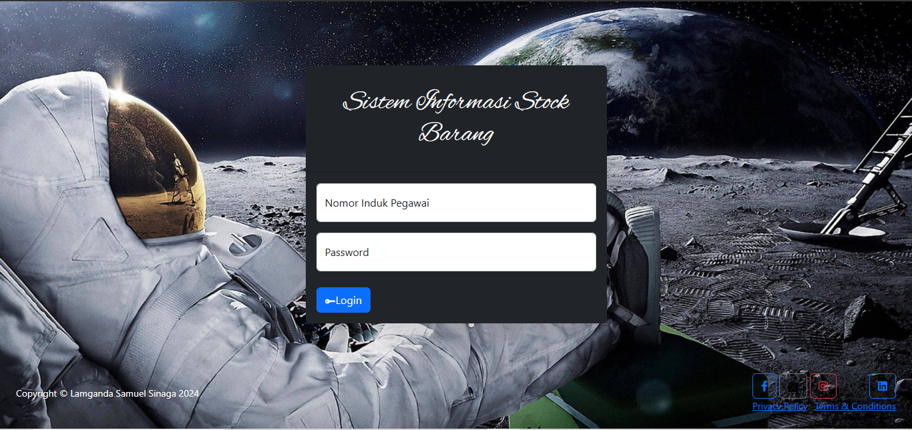
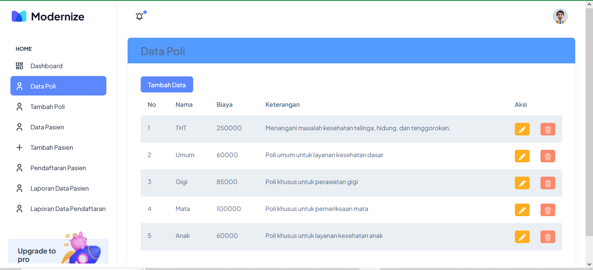
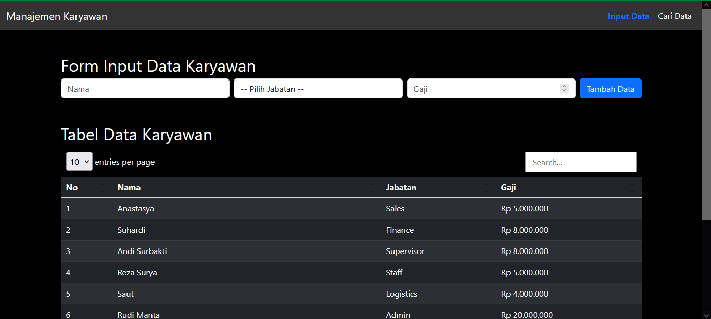

Projects
1. Project UMKM 2024: Mengembangkan Sistem Manajemen Distribusi Produk
Pada tahun 2024, saya terlibat dalam pengembangan sebuah Sistem Manajemen Distribusi Produk untuk UMKM (Usaha Mikro, Kecil, dan Menengah). Tujuan utama proyek ini adalah membantu pelaku UMKM dalam mengelola distribusi produk mereka secara lebih efisien dan terorganisir.
Sistem ini dibangun menggunakan PHP Native untuk back-end, dengan struktur kode yang terorganisir dan mudah dikembangkan. Database yang digunakan adalah MySQL untuk menyimpan data produk, pesanan, dan distribusi. Fitur-fitur utama yang dikembangkan meliputi:
- Manajemen stok produk secara real-time.
- Pelacakan distribusi produk ke berbagai lokasi.
- Laporan penjualan dan distribusi otomatis.
- Integrasi dengan platform pembayaran digital.
Proyek ini berhasil meningkatkan efisiensi operasional UMKM mitra sebesar 30% dan mengurangi kesalahan dalam proses distribusi. Saya sangat bangga dapat berkontribusi dalam membantu UMKM berkembang melalui solusi teknologi yang inovatif.

2. Tugas & Project 2024: Mengembangkan Sistem Informasi Stock Barang
Pada tahun 2024, saya mengerjakan sebuah Sistem Informasi Stock Barang yang dirancang untuk membantu bisnis dalam mengelola inventaris mereka secara lebih efisien dan terkontrol. Sistem ini bertujuan untuk memudahkan pelacakan stok barang, mengurangi kesalahan manusia, dan memberikan laporan stok secara real-time.
Sistem ini dibangun menggunakan PHP Native untuk back-end, dengan struktur kode yang modular dan mudah dikembangkan. Database yang digunakan adalah MySQL untuk menyimpan data barang, transaksi, dan stok. Beberapa fitur utama yang dikembangkan meliputi:
- Manajemen data barang (tambah, edit, hapus, dan cari).
- Pelacakan stok barang secara real-time.
- Laporan stok harian, mingguan, dan bulanan.
- Notifikasi stok barang yang hampir habis.
- Antarmuka pengguna yang sederhana dan mudah digunakan.
Proyek ini berhasil meningkatkan akurasi pengelolaan stok sebesar 40% dan mengurangi waktu yang dibutuhkan untuk melakukan inventaris manual. Saya sangat bangga dapat lebih efisien.

3. Project 2024: Mengembangkan Sistem Klinik
Pada tahun 2024, saya terlibat dalam pengembangan sebuah Sistem Manajemen Klinik yang dirancang untuk memudahkan administrasi dan pelayanan pasien di klinik kesehatan. Tujuan utama proyek ini adalah meningkatkan efisiensi operasional klinik dengan menyediakan solusi digital yang terintegrasi.
Sistem ini dibangun menggunakan framework Laravel untuk back-end, yang dipilih karena kemampuannya dalam menyediakan struktur kode yang rapi, aman, dan mudah dikembangkan. Database yang digunakan adalah MySQL untuk menyimpan data pasien, jadwal dokter, rekam medis, dan transaksi. Fitur-fitur utama yang dikembangkan meliputi:
- Manajemen data pasien dan rekam medis elektronik.
- Penjadwalan konsultasi dan pemeriksaan dengan dokter.
- Laporan keuangan dan transaksi klinik.
- Notifikasi otomatis untuk janji temu dan pengingat obat.

4. Tugas Project Sederhana 2024: Sistem Manajemen Karyawan
Pada tahun 2024, saya mengembangkan sebuah Sistem Manajemen Karyawan sebagai bagian dari tugas project sederhana. Tujuan dari proyek ini adalah untuk memudahkan perusahaan dalam mengelola data karyawan, mulai dari informasi pribadi, jabatan, hingga riwayat pekerjaan.